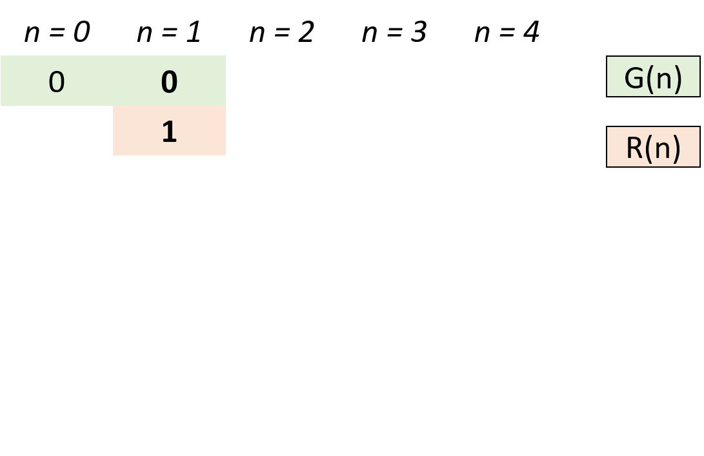
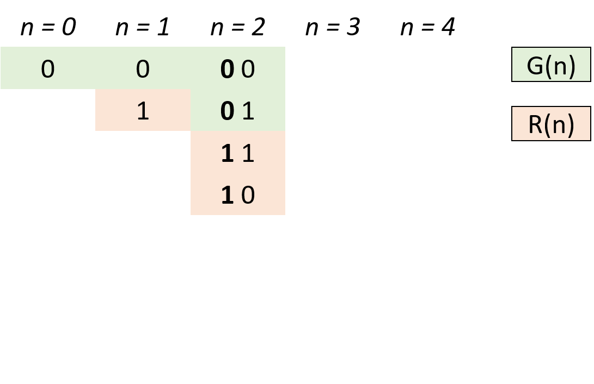
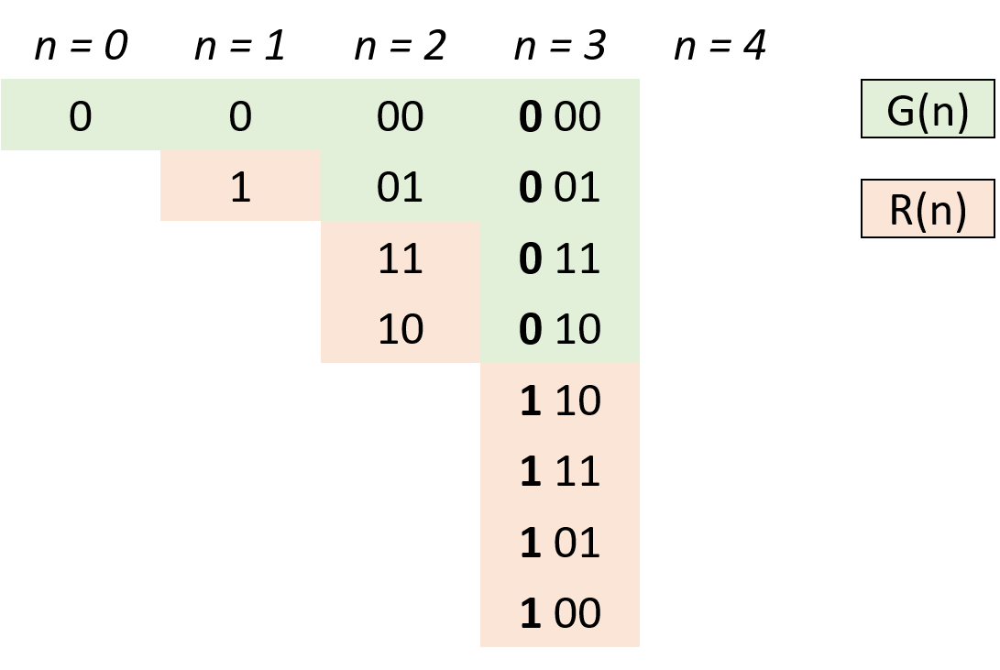

The gray code is a binary numeral system where two successive values differ in only one bit.
Given a non-negative integer n representing the total number of bits in the code, print the sequence of gray code. A gray code sequence must begin with 0.
Input: 2 Output: [0,1,3,2] Explanation: 00 - 0 01 - 1 11 - 3 10 - 2 For a given n, a gray code sequence may not be uniquely defined. For example, [0,2,3,1] is also a valid gray code sequence. 00 - 0 10 - 2 11 - 3 01 - 1
Input: 0 Output: [0] Explanation: We define the gray code sequence to begin with 0. A gray code sequence of n has size = 2^n^, which for n = 0 the size is 2^0^ = 1. Therefore, for n = 0 the gray code sequence is [0].
解题分析
-
设 n 阶格雷码集合为 G(n)，则 G(n+1) 阶格雷码为：
-
给 G(n) 阶格雷码每个元素二进制形式前面添加 0，得到 G'(n) ；
-
设 G(n) 集合倒序（镜像）为 R(n)，给 R(n) 每个元素二进制形式前面添加 1，得到 R'(n)；
-
G(n+1) = G'(n) ∪ R'(n) 拼接两个集合即可得到下一阶格雷码。
-
-
根据以上规律，可从 0 阶格雷码推导致任何阶格雷码。
-
代码解析：
-
由于最高位前默认为 00，因此 G'(n) = G(n)，只需在 res(即 G(n) )后添加 R'(n)即可；
-
计算 R'(n)：执行
head = 1 << i计算出对应位数，以给 R(n) 前添加 1 得到对应 R'(n)； -
倒序遍历 res(即 G(n) )：依次求得 R'(n) 各元素添加至 res 尾端，遍历完成后 res(即 G(n+1))。
-



这个题的解法跟 338. Counting Bits 有异曲同工之妙！
参考资料
The gray code is a binary numeral system where two successive values differ in only one bit.
Given a non-negative integer n representing the total number of bits in the code, print the sequence of gray code. A gray code sequence must begin with 0.
Example 1:
Input: 2
Output: [0,1,3,2]
Explanation:
00 - 0
01 - 1
11 - 3
10 - 2
For a given n, a gray code sequence may not be uniquely defined.
For example, [0,2,3,1] is also a valid gray code sequence.
00 - 0
10 - 2
11 - 3
01 - 1
Example 2:
Input: 0
Output: [0]
Explanation: We define the gray code sequence to begin with 0.
A gray code sequence of n has size = 2n, which for n = 0 the size is 20 = 1.
Therefore, for n = 0 the gray code sequence is [0].
1
2
3
4
5
6
7
8
9
10
11
12
13
14
15
16
17
18
19
20
21
22
23
24
25
26
27
28
29
30
31
32
33
34
35
36
37
38
39
package com.diguage.algorithm.leetcode;
import java.util.ArrayList;
import java.util.Arrays;
import java.util.List;
/**
* = 89. Gray Code
*
* https://leetcode.com/problems/gray-code/[Gray Code - LeetCode]
*
* @author D瓜哥, https://www.diguage.com/
* @since 2020-02-05 19:36
*/
public class _0089_GrayCode {
/**
* Runtime: 0 ms, faster than 100.00% of Java online submissions for Gray Code.
* Memory Usage: 37 MB, less than 8.00% of Java online submissions for Gray Code.
*
* Copy from: https://leetcode-cn.com/problems/gray-code/solution/gray-code-jing-xiang-fan-she-fa-by-jyd/[Gray Code （镜像反射法，图解） - 格雷编码 - 力扣（LeetCode）]
*/
public List<Integer> grayCode(int n) {
List<Integer> result = new ArrayList<>((int) Math.pow(2, n));
result.add(0);
int head = 1;
for (int i = 0; i < n; i++) {
for (int j = result.size() - 1; j >= 0; j--) {
result.add(head + result.get(j));
}
head <<= 1;
}
return result;
}
public static void main(String[] args) {
_0089_GrayCode solution = new _0089_GrayCode();
System.out.println(Arrays.toString(solution.grayCode(4).toArray()));
}
}